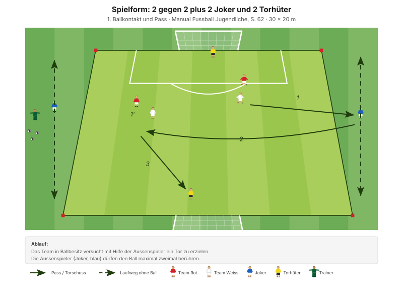

Der beste Schutz vor dem Konter wird vor dem Ballverlust aufgebaut. Während das Team angreift, steht immer jemand hinter dem Ball und denkt schon an den Moment, in dem er weg ist.
"Pässe abfangen (absichern)" Taktisches Prinzip der Spielphase "Wir haben den Ball nicht", Manual Fussball Jugendliche, S. 69
Die Regel des Abends: Im eigenen Angriff bleibt immer einer hinter dem Ball. Bei uns ist das im 1-3-2-1 der zentrale Verteidiger – er rückt nie über die Mittellinie. Das ist keine Manual-Vorgabe, sondern eine Vereinbarung fürs Team; sie kostet einen Angreifer und spart mehr Gegentore, als sie Tore kostet.
Zur Quellenlage: Das Manual hat für die Umschaltphasen kein eigenes Good-Practice-Kapitel. Die Formen stammen aus den beiden Hauptphasen – ausgewählt wurden diejenigen, deren Aufbau den Moment des Ballverlusts abbildet.
Das Manual fragt in den Entwicklungsfragen ausdrücklich "Wer kommuniziert wann, was, wie?", beantwortet es aber nicht. Für D-Junioren reichen drei feste Kommandos:
Diese drei Rufe stehen so nicht in den J+S-Unterlagen – sie sind eine eigene Ergänzung. Aus allgemeinem Fussballwissen: mehr als drei Kommandos merkt sich ein D-Junior im Spiel nicht.
| Zeit | Min | Teil | Inhalt |
|---|---|---|---|
| 0–4 | 4 | Besammlung | Thema ansagen, Gruppen einteilen |
| 4–16 | 12 | E1 | Pylonentore schliessen · Big 4 zwischen den Wiederholungen |
| 16–22 | 6 | E2 | 2 Teams gegen 1 Team mit Toren |
| 22–30 | 8 | E3 | Sprint und Torschuss blocken (Explosivität) |
| 30–45 | 15 | H1 | 2 gegen 2 plus 2 Joker und 2 Torhüter |
| 45–48 | 3 | Pause | Trinken, Umbau |
| 48–70 | 22 | H2 | 3 gegen 3 plus 2 Torhüter mit Anspielstationen |
| 70–82 | 12 | Abschluss | Freies Spiel 5 gegen 5 plus 2 Torhüter |
| 82–90 | 8 | Ausklang | Cool-down, zwei Entwicklungsfragen, Verabschiedung |
| Total | 90 |
Einstieg 26 · Hauptteil 37 · Abschluss 20 Min. – nach dem Trainingsschema des Manuals (S. 43).
Nur einmal umbauen: Die Pylonentore des Einstiegs werden in der Pause zu den Anspielzonen von H2.
Eigene Skizze · Platzaufteilung
Nur einmal aufbauen – das Einstiegsfeld liegt im späteren Spielfeld.
12 Minuten · 32 × 24 m · 3 Teams à 4 · alle 12 Spieler
Eigene Skizze · Pylonentore schliessen
3 Wiederholungen à 1'30''–2' – zwischen den Wiederholungen je zwei Präventionsübungen.
"Positionen der Offensivspieler erkennen und Passwege durch die Tore schliessen" SFV-Lernbaustein "Einstieg TA: Gefährliche Räume erkennen und Passwege schliessen", Phase 1
Derselbe Lernbaustein wie in D-2 und E-2 – heute mit der Frage, welches Tor das gefährlichste ist. Alle zu decken geht nicht; genau diese Auswahl ist Restverteidigung.
Je zwei Übungen zwischen den Wiederholungen, 25 Sekunden pro Übung:
| Bereich | Übung | Worauf achten |
|---|---|---|
| Fussgelenk | Einbeinsprünge seitlich | Bei der Landung knickt das Knie nicht ein, Oberkörper leicht nach vorne, Blick nach vorne. |
| Knie | Kniebeuge mit Spannung | Fersen auf dem Boden, Oberkörper gerade, Schultern nach hinten, Blick nach vorne. |
| Hüfte | Mobilität in tiefer Position | Die Fersen bleiben in Kontakt mit dem Boden, der Blick ist nach vorne gerichtet. |
| Hamstrings | Leg Curl mit Miniband | Knie bleiben hüftbreit, Standbein leicht gebeugt. |
"Arbeit mit Zeitvorgaben – nicht mit Anzahl Wiederholungen." Prinzip Körperstabilität, Manual Fussball Jugendliche, S. 75
Zwei Punkte pro Übung nennen, nicht mehr. Qualität vor Tempo.
6 Minuten · gleiches Feld · 3 Wiederholungen à 1'30''–2'
"Positionen der Offensivspieler erkennen und Passwege durch die Tore schliessen" SFV-Lernbaustein "Einstieg TA: Gefährliche Räume erkennen und Passwege schliessen", Phase 2
8 Minuten · 2 Bahnen · Paare bilden
Das Blocken ist die letzte Handlung der Restverteidigung – und die einzige, die übrig bleibt, wenn alles andere zu spät war.
| Parameter | Vorgabe |
|---|---|
| Distanz | 15–30 m |
| Wiederholungen | 3 |
| Pause zwischen Wiederholungen | 1/15 (Belastung × 15) |
| Serien | 3 |
| Pause zwischen Serien | 1'30''–2' |
"Erholungszeit: 10- bis 20-fache Dauer der Belastungszeit, abhängig von der Laufdistanz. Vollständig erholen zwischen den Wiederholungen." Prinzipien Explosivität, Manual Fussball Jugendliche, S. 72
15 Minuten · 30 × 20 m · Rotation alle 3 Min.
Manual-Vorlage · Diagramm 16 "2 gegen 2 plus 2 Joker und 2 Torhüter" (S. 62)

8 Spieler im Feld, 4 rotieren alle 3 Minuten hinein.
Bei 2 gegen 2 ist die Restverteidigung genau ein Spieler. Damit ist die Entscheidung nicht mehr wegzudiskutieren: Wer geht mit nach vorne, wer bleibt? Und der Preis ist sofort spürbar, in beide Richtungen.
22 Minuten · 40 × 34 m · alle 12 Spieler
Manual-Vorlage · Diagramm 40 "4 gegen 4 plus 2 Torhüter mit 2 offensiven Anspielstationen pro Team" (S. 70)

Heute 3 gegen 3 statt 4 gegen 4 – sonst wären es 14 Spieler.
Der Ball hinter die Linie ist genau der Ball, den ein Konter sucht: schnell, vertikal, in den Rücken der Verteidigung. Wer ihn verhindern will, muss vorher richtig gestanden haben – danach ist es zu spät. Die Form macht Restverteidigung damit zur Voraussetzung des eigenen Angriffs, nicht zur Reaktion darauf.
12 Minuten · gleiches Feld, kein Umbau
Keine Auflagen, keine Bonusregeln. Hier wird sichtbar, was von den 70 Minuten davor hängen geblieben ist.
8 Minuten · Cool-down im Gehen, dann Kreis in der Mitte
Zuerst 3–4 Minuten lockeres Auslaufen und Mobilität, dann der Kreis. Zwei Fragen – die Antworten kommen von den Spielern, nicht vom Trainer:
"Habt ihr die gegnerischen Angriffe erfolgreich unterbunden? Wenn nein, welches Prinzip habt ihr vernachlässigt? Was müsst ihr verbessern (individuell/als Gruppe)?"
"Hast du kommuniziert? Wie kommunizierst du noch besser? Wer kommuniziert wann, was, wie?" Entwicklungsfragen zur Spielphase "Wir haben den Ball nicht", Manual Fussball Jugendliche, S. 69
Material aufräumen – laut Teamregel Respekt Teamarbeit, nicht Strafe.
| Teil | Vorlage | Seite |
|---|---|---|
| E1 – E3 | SFV-Lernbaustein "Einstieg TA: Gefährliche Räume erkennen und Passwege schliessen", Phasen 1–3 | – |
| H1 | Spielform "2 gegen 2 plus 2 Joker und 2 Torhüter" (Diagramm 16) | 62 |
| H2 | Spielform "4 gegen 4 plus 2 Torhüter mit Anspielstationen" (Diagramm 40) | 70 |
| Ziele, Coaching, Entwicklungsfragen | Kapitelkopf "Wir haben den Ball nicht" | 69 |
| Absicherungsregel, die drei Rufe | Eigene Ergänzung | – |
| Explosivität, Körperstabilität | Athletik und Gesundheit | 72, 75 |
| Trainingsaufbau | Trainingsschema (Abb. 19) | 43–45 |
Alle Seitenangaben beziehen sich auf das J+S Manual Fussball Jugendliche (BASPO/SFV, 2022). Spielerzahlen und Feldmasse sind auf einen Kader von 12 Spielern angepasst. Dieser Trainingsplan wurde mit Unterstützung von KI (Claude, Anthropic) erstellt.